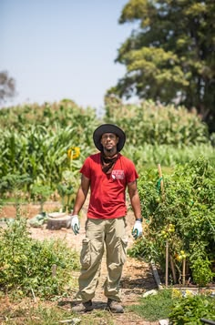
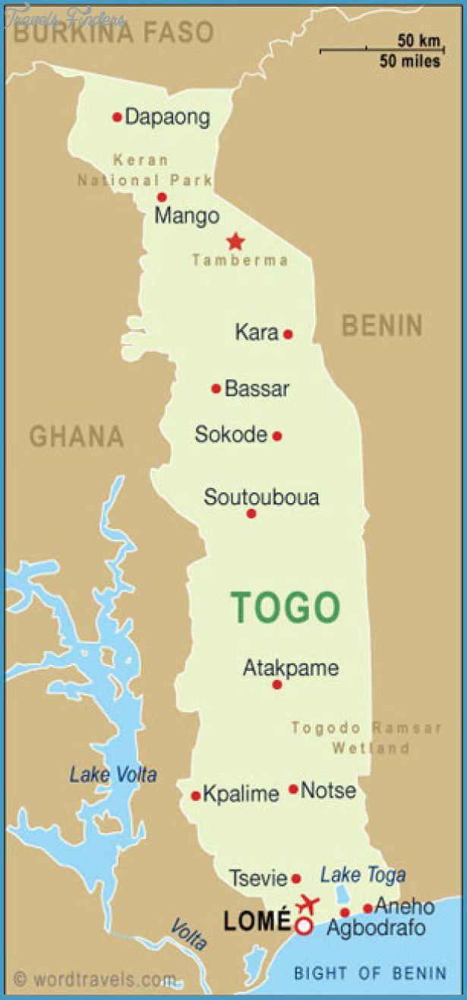

Kossi Mensah
Producteur de Maïs
Région MaritimeL’ histoire d’AGRI-TOGO est celle d’une passion partagée et d’un engagement pour le développement de l’agriculture et de l’industrie agroalimentaire au Togo. AGRI-TOGO a été créé en 2019 au Togo dans le but de contribuer au développement durable de l’agro-industrie au Togo et dans la sous-région Ouest Africaine. Notre entreprise se distingue dans le secteur agro-industriel par un engagement clair : fournir des solutions complètes, innovantes et durables qui garantissent stabilité, qualité, et croissance pour tous nos partenaires (négociants, transformateurs, distributeurs, éleveurs et agriculteurs ) grâce à nos différentes activités que sont :
Chez AGRI-TOGO, nous croyons en une approche qui va bien au-delà de la simple transaction commerciale. Nous sommes convaincus que le succès durable se construit sur des fondations de confiance, d’intégrité, et de partenariat mutuellement bénéfiques. C’est la raison pour laquelle nous nous engageons à soutenir nos producteurs locaux, à apporter une contribution positive à la réussite et à la croissance de nos clients et partenaires, afin de créer un environnement inclusif, durable et bénéfique pour tous les acteurs sur les plans économique et social.


Notre avantage distinctif réside dans notre stratégie unique et novatrice d’intégration verticale et horizontale de la chaîne de valeur agro-industrielle grâce à nos différentes activités. En maîtrisant chaque étape de l’ensemble de la chaîne de valeur, AGRI-TOGO s’assure de garantir une qualité exceptionnelle, une disponibilité constante des produits, et une réduction des coûts, offrant ainsi des solutions personnalisées et avantageuses en termes de coûts, qualité, délais et volumes pour nos clients et partenaires.

Producteur de Maïs
Région MaritimeProductrice d'Ananas
PlateauxProducteur de Manioc
Région Maritime
AGRI-TOGO intervient principalement dans les régions Maritime et des Plateaux où elle accompagne plusieurs centaines de producteurs agricoles.
La coopérative développe des programmes de formation, de commercialisation et d'amélioration des techniques agricoles afin de renforcer les capacités des exploitants.